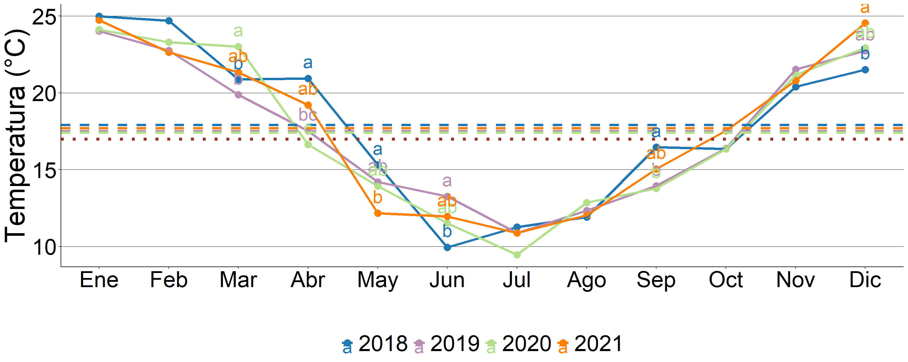
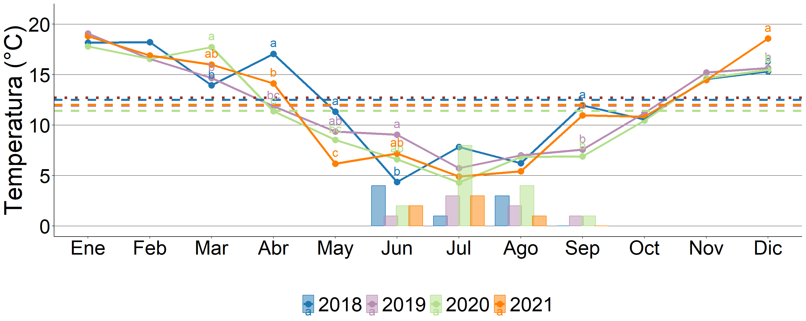
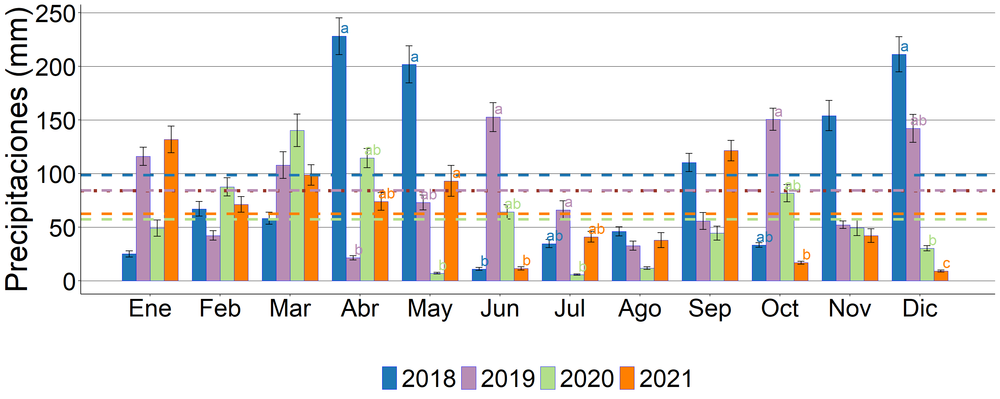

Temperatura media
## # A tibble: 36 × 9
## month term contrast null.value estimate std.error df statistic adj.p.value
## <int> <chr> <chr> <dbl> <dbl> <dbl> <dbl> <dbl> <dbl>
## 1 3 year year2018 - year2019 0 0.999 0.781 120 1.28 0.578
## 2 3 year year2018 - year2020 0 -2.14 0.781 120 -2.74 0.0355
## 3 3 year year2018 - year2021 0 -0.468 0.781 120 -0.599 0.932
## 4 3 year year2019 - year2020 0 -3.14 0.781 120 -4.02 0.000593
## 5 3 year year2019 - year2021 0 -1.47 0.781 120 -1.88 0.243
## 6 3 year year2020 - year2021 0 1.67 0.781 120 2.14 0.147
## 7 4 year year2018 - year2019 0 3.42 0.707 116 4.83 0.0000247
## 8 4 year year2018 - year2020 0 4.30 0.707 116 6.08 0.0000000936
## 9 4 year year2018 - year2021 0 1.73 0.707 116 2.44 0.0748
## 10 4 year year2019 - year2020 0 0.884 0.707 116 1.25 0.596
## # ℹ 26 more rows
Temperatura mínima y días con heladas

Gráfico de precipitaciones mensuales acumuladas
## month contrast p.value
## 1 1 year2018 / year2019 0.23575126255
## 2 1 year2018 / year2020 0.86628733408
## 3 1 year2018 / year2021 0.16781530326
## 4 1 year2019 / year2020 0.66557437103
## 5 1 year2019 / year2021 0.99773379542
## 6 1 year2020 / year2021 0.55009813709
## 7 2 year2018 / year2019 0.94467426248
## 8 2 year2018 / year2020 0.99071639029
## 9 2 year2018 / year2021 0.99983659854
## 10 2 year2019 / year2020 0.82675457877
## 11 2 year2019 / year2021 0.92127287774
## 12 2 year2020 / year2021 0.99616899127
## 13 3 year2018 / year2019 0.84304424858
## 14 3 year2018 / year2020 0.62671543196
## 15 3 year2018 / year2021 0.89725692414
## 16 3 year2019 / year2020 0.98110310997
## 17 3 year2019 / year2021 0.99929102898
## 18 3 year2020 / year2021 0.95747073283
## 19 4 year2018 / year2019 0.01751516839
## 20 4 year2018 / year2020 0.72713684563
## 21 4 year2018 / year2021 0.36858270746
## 22 4 year2019 / year2020 0.18958144551
## 23 4 year2019 / year2021 0.47848652074
## 24 4 year2020 / year2021 0.93412614290
## 25 5 year2018 / year2019 0.43684307487
## 26 5 year2018 / year2020 0.00161162715
## 27 5 year2018 / year2021 0.63713884943
## 28 5 year2019 / year2020 0.07928882498
## 29 5 year2019 / year2021 0.98791668316
## 30 5 year2020 / year2021 0.03790030101
## 31 6 year2018 / year2019 0.04965848274
## 32 6 year2018 / year2020 0.38869106787
## 33 6 year2018 / year2021 0.99958502092
## 34 6 year2019 / year2020 0.64164667978
## 35 6 year2019 / year2021 0.07644680070
## 36 6 year2020 / year2021 0.47598474019
## 37 7 year2018 / year2019 0.99086481839
## 38 7 year2018 / year2020 0.23785970687
## 39 7 year2018 / year2021 0.99172276891
## 40 7 year2019 / year2020 0.09938175501
## 41 7 year2019 / year2021 0.91443708823
## 42 7 year2020 / year2021 0.30089659078
## 43 8 year2018 / year2019 0.96642848683
## 44 8 year2018 / year2020 0.37400530979
## 45 8 year2018 / year2021 0.97198179317
## 46 8 year2019 / year2020 0.65369027423
## 47 8 year2019 / year2021 0.99997248335
## 48 8 year2020 / year2021 0.60963585124
## 49 9 year2018 / year2019 0.82923140945
## 50 9 year2018 / year2020 0.70879983560
## 51 9 year2018 / year2021 0.99907053723
## 52 9 year2019 / year2020 0.99586271480
## 53 9 year2019 / year2021 0.75698483548
## 54 9 year2020 / year2021 0.62672879081
## 55 10 year2018 / year2019 0.20800569602
## 56 10 year2018 / year2020 0.68370273190
## 57 10 year2018 / year2021 0.88590612196
## 58 10 year2019 / year2020 0.82076667584
## 59 10 year2019 / year2021 0.04558360474
## 60 10 year2020 / year2021 0.27006855510
## 61 11 year2018 / year2019 0.46509871909
## 62 11 year2018 / year2020 0.42266923432
## 63 11 year2018 / year2021 0.32062624356
## 64 11 year2019 / year2020 0.99986387685
## 65 11 year2019 / year2021 0.99371288249
## 66 11 year2020 / year2021 0.99758725775
## 67 12 year2018 / year2019 0.92846051032
## 68 12 year2018 / year2020 0.05492690280
## 69 12 year2018 / year2021 0.00251694867
## 70 12 year2019 / year2020 0.20059043164
## 71 12 year2019 / year2021 0.01382443997
## 72 12 year2020 / year2021 0.62735206771